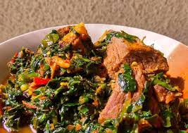

Vegetable Soup

Description
The Nigeria vegetable soup is a popular delicacy in Nigeria.
It is commonly served during occassions of importance
Also it is very delicious and very nutriotion, and consumed by almost all enthnic groups around the country
Although it can be very expensive and, difficult to prepare.
Ingredients
- 1/2 kg of beef
- 1 kg of dried fish
- 1 cup of lobster (dried)
- 2 bunches of water leaf
- 2 bunches of vegetable leaf
- 5 bell pepper
- 1 cup of shrimp
- 1 cup of palm oil
- A cup of avocado oil
- Onion
- Salt and blended Pepper
- Maggi
Steps
- Soak the dried fish in hot water for four hours
- Wash and cut the beef into bite size pieces
- Transfer the beef into a pot
- Add a little water, chopped onions, maggi, and salt to taste
- Cover the pot and set it on fire. Allow it to boil for about 40 minutes
- Wash the vegetable on a dish
- Chop the washed vegetable leaf into thin slice with a knife
- Pour the avocado oil into a frying pot, that is sets on a fire
- Add the onions. Let them fry until they are translucent.
- Add the blended pepper to the onions and allow the paste to cook for about 20 minutes
- Drain the water from the fish
- Add the boild beef from step 5, fish, shrimp, lobster, pepper, and onion
- Stir them together and allow to cook for about 15 minutes
- Add the vegetable leaf
- Add the palm oil
- Stir together and allow to cook for about 10 minutes
- Your delicious meal is ready to be served
Back to main page